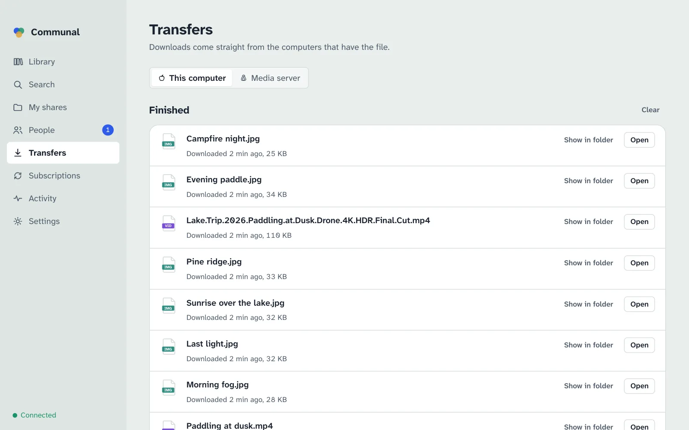
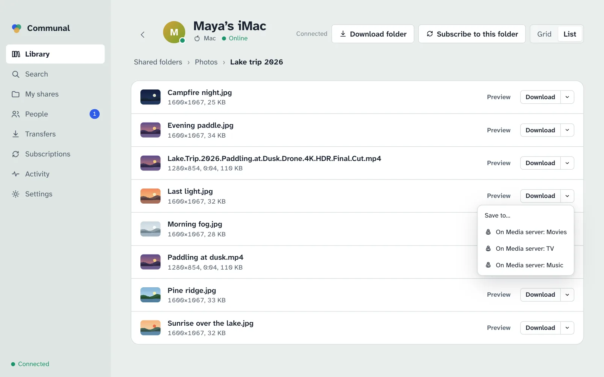
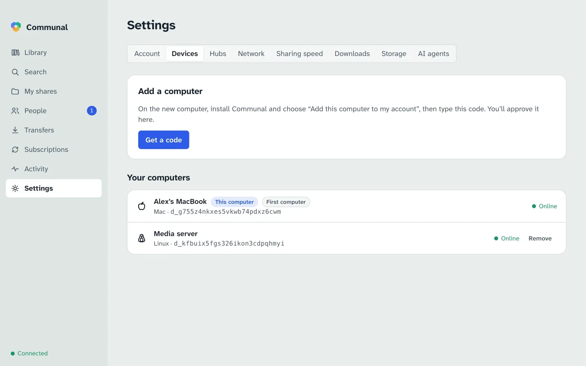

Using the app
Everything the Communal app does, screen by screen.
Install
Download Communal for your computer from the front page and open
it. On a Mac, drag it into Applications. On Linux you can also run
curl -fsSL https://hypnopompia.github.io/Communal/install.sh | sh. Communal
checks for updates itself and installs them the next time you quit; a
Restart to update button appears in the sidebar when one is ready.
There’s also an app for Android phones that downloads but doesn’t share; see Android phones.
The first time it runs, macOS asks whether Communal may find devices on your local network. Choose Allow: Communal talks directly to the computers of the people you share with, including ones in your own home, and asks your router to let them reach you.
First launch

- I’m new here. Choose the name people will know you by, type the hub address you were given, and name this computer. Some hubs let you in straight away; others wait for their admin to approve you, and you can set up your shared folders meanwhile.
- Add this computer to my account. On a computer that already uses Communal, open Settings › Devices and choose Get a code. Type the code here. The other computer then asks you to approve this one: check that the ID it shows matches the one shown here before approving.
- Restore my account. If you’ve lost every computer you used Communal on, use the recovery key you saved (a file and its passphrase, or 24 words). Your shares, connections and access choices come back as this computer rejoins your hubs.
Library
The Library lists everyone whose files you can see, computer by computer, starting with your own. An icon shows whether each is a Mac, Windows or Linux computer. A green dot means it’s online now; otherwise it says when it was last seen.
People who share something with everyone on your hub are listed too, before you’re connected with them. Next to each person you see where you stand: Connect sends them a request, Accept answers theirs, and Request sent or Connected says the rest. On several hubs, there’s a line for each.

Open a computer to browse its shared folders. Switch between Grid and List at the top right. A long file name is shortened in the middle, so its end and type stay in view; hover over it for the whole name.

- Click a file to look at it: pictures and PDF pages open large, text and code show their first page, videos and music play straight from the owner’s computer.
- Double-click a file, or use Download, to save it in your downloads folder (Settings › Downloads). The arrow next to Download has Save to…, which asks where to put it instead, and Save to Movies and the like for your destinations. If that’s inside one of your shared folders, the file is shared like the rest of that folder, so Communal says who will see it and asks first.
- Download folder saves the folder you’re in, with the folders inside it, once. Files you already have aren’t downloaded again.
- Subscribe to this folder follows the folder you’re in (see Subscriptions).
If the computer is offline you can still look around, but downloads wait until it’s back.
Search
Search looks through everything shared with you on every hub at once. Type part of a name:
every word counts, so beach 2019 finds “Beach trip (2019).mp4”. Narrow it by
kind (pictures, videos, music, documents…), by size, or by who it’s from: anyone, your
connections, or people you’ve verified.

A file that several people have appears once. Show only available files hides files whose computers haven’t been online in the past week, and results from computers that are online come first.
Sharing and access
Open My shares and choose Share a folder. Give it the name others will see; where it is on your computer stays private. Communal prepares each file (and makes previews of pictures, videos and documents) in the background; the progress shows at the top.

A new folder is visible only to you. Each folder in My shares says who can see it. Change sets that for the whole folder. Files inside… opens it, so you can choose differently for a file or a folder within it. The choices are:
- Only me: your other computers can still see it.
- Specific people and groups: people you’re connected with. Nobody can tell who else has access.
- Everyone on the hub: anyone signed in to that hub can find and download it.
- Same as the folder it’s in: files and folders follow the nearest folder above them unless you choose otherwise.

Access is set separately on each hub. If you’re on more than one, each folder has a line per hub, each with its own Change: a folder can be public on one hub and private on another. List it on, when you share a folder, chooses which hubs see it at all.
People and groups
To share with someone in particular, connect with them first. In People, search for their name and choose Connect, or use Connect next to them in the Library. They’ll see your request and can accept it. Your connections show whether they’re online. Either of you can disconnect at any time, which ends access granted through the connection straight away.
On several hubs, you connect on each one separately, and so do groups. Someone you know on more than one is still listed once, with a line for each hub.

Verify shows a safety code made from both your keys. Compare it with the one they see, in person or on a call; if they match, nobody is pretending to be either of you.
Groups are your own lists of connections, for sharing with several people at once. Only you see your groups; members don’t see each other through them.
Transfers
Downloads show their progress and how fast each computer is sending. A download from a computer that’s offline waits and starts by itself when it’s back, and one from a computer that’s busy sending to others waits its turn. Clear takes finished downloads off the list; the files stay.

If you have more than one computer, the switch at the top shows another computer’s downloads instead, and lets you cancel them (see Your other devices). A download one of your devices asked for says “Started from” and that device’s name.
If two computers can’t reach each other, Transfers says why (for example a router that blocks direct connections) and what usually fixes it, and on whose side.
Subscriptions
Subscribing to a folder downloads everything in it and keeps it up to date: new files arrive by themselves, including ones added while you were away. When you subscribe, Communal asks whether to delete your copy when the owner deletes a file; the answer is No unless you change it. Copies you’ve changed yourself are never touched, and deleted files go to your trash, not straight away.
A subscribed folder goes into your downloads folder, or into one of your destinations if you pick one.
In Subscriptions you can pause a folder, change that choice, or unsubscribe (files you already have stay). Your other computers’ subscriptions are listed there too, one computer at a time, and you can change them the same way while remote control is on there (see Your other devices).

Synced folder
A folder that’s the same on all your computers. In My shares, turn on
Synced folder on each computer you want it on (it’s Communal in your
home folder unless you pick another). Only you can see it.
- Files you add, change or delete on one computer follow on the others. Deleted files go to the trash.
- Two computers sync when both are on, directly with each other. Nothing is kept on the hub, so a laptop that was asleep catches up the next time both are on.
- If the same file was changed on two computers before they could sync, the newer one keeps the name and the other is kept beside it as “name (conflicted copy date code)”.
- Turning it off on a computer stops it syncing. Nothing is deleted anywhere.
The synced folder is the folder you share under the name Communal, so sharing
a folder by that name turns syncing on too. A hidden .communal-sync file in
it lets your other computers find it even when it’s empty.
Destinations
Destinations are named folders on a computer, like Movies, TV or Music, that downloads can go into. Add them in Settings › Downloads › Destinations: give each a name and choose its folder. Downloads is always there and is your downloads folder.
-
On the computer itself they’re shortcuts: Save to Movies under the Download
arrow, and a Destination choice when you download or subscribe to a folder. A
folder goes inside the destination under its own name, so subscribing to Alex’s
Filmsfolder into Movies fillsMovies/Films. - From your other devices, names are all they get. A phone or laptop asking this computer to download can pick Movies or TV, but never sees or chooses the folders behind them, so nothing can be saved anywhere you didn’t name.
Your other devices
Any of your devices can ask another of your computers to download something: your laptop or phone can put a film straight onto the media server at home, while you’re away from it. The files still go directly from the computer that has them to the one downloading; only the request travels through the hub, sealed so that the hub can’t read it.
Turning it on
A computer only takes requests if you allow it. On that computer, open
Settings › Downloads and turn on
Let my other devices start downloads on this computer (on a server with no screen,
run communal remote allow; see the CLI). It’s
off until you do.
With Into the downloads folder too turned off, your other devices can only save into this computer’s destinations. That suits a media server that should only ever get files in Movies or TV.
Asking another computer

- A file: the arrow next to Download lists your computers that take requests: Download on Media server, or On Media server: Movies for each of its destinations.
- A folder: Download folder and Subscribe to this folder have an On choice, followed by that computer’s destinations. This works for your own computers’ folders too, say to copy your laptop’s Music folder onto the server.
- Keeping an eye on it: the switch at the top of Transfers shows that computer’s downloads, and Subscriptions lists its subscriptions, which you can pause, resume, change or stop following from here.
A computer that’s off or asleep can’t take requests; Subscriptions says so, and its subscriptions catch up when it’s back. Other devices can’t change its settings, its shares or who sees what: only downloads and subscriptions.
A media server you control from anywhere. Install Communal on the server with the
command line, add it to your account with a code, then on
it run communal dest add Movies /srv/media/movies (and TV),
communal remote allow and communal remote downloads off. From
your laptop or phone you can now send anything you find to its Movies or TV, and
subscribe it to a friend’s folder of new episodes.
Android phones
The Android app is for getting things: search everything shared with you, browse people’s folders with previews, download to your phone, keep a folder in sync (music from your computer, say), and send downloads to your computers at home. It never shares the phone’s own files.


Installing it
The app isn’t in the Play Store. It comes from the same GitHub releases as the computer apps, and needs Android 11 or later on a 64-bit phone (almost every phone from the last few years).
-
On the phone, open this site and tap Android on the
front page, or get
communal-…-arm64.apkfrom the latest release. If a release has no APK, the one before it does. - Open the downloaded file. Android asks whether your browser (or Files app) may install unknown apps: tap Settings, turn on Allow from this source, and go back.
- Tap Install, then Open.
Setting it up
- I have Communal. On your computer, open Settings › Devices and choose Get a code. On the phone, type the hub’s address and that code, then tap Link this phone. Your computer then asks you to approve it, by the name you gave the phone. Once approved, the phone sees everything your computer does.
- I’m new. Join a hub with a new account, from the phone alone. You can add your computers to it later.
Using it
- Search and Library work like on a computer. Tap a file or folder for what you can do with it: Download to this phone, Keep in sync on this phone, and the same for each of your computers that takes requests.
-
Downloads go to
Download/Communaland show up in your gallery and music apps. A synced folder’s deleted files go to the app’s own trash and are emptied after 30 days. - Transfers shows the phone’s downloads and synced folders, or one of your computers’ downloads and subscriptions.
- Phones can’t keep running in the background like a computer, so synced folders catch up on a schedule you choose in Settings (hourly, every 6 hours, daily, or only when the app is open; on Wi-Fi only unless you change it), and whenever the app is open.
- The app checks for a new version once a day and offers to download it. Installing it keeps your account and settings.
On mobile data, many networks don’t let other computers reach a phone directly, and Communal never relays files through the hub, so downloads to the phone may wait until you’re on Wi-Fi. Asking your computer at home to download works from anywhere.
Activity
Activity lists who got which of your files and when. This list is kept on your computer only; the hub never sees it. Include previews adds the thumbnails and previews people looked at, and Clear… forgets the whole list.

Settings
Account
Shows your fingerprint (the code people’s safety codes come from). Save recovery key exports a file protected by a passphrase, or 24 words to write down. Keep it somewhere safe and private: whoever has it can use your account. Only the first computer you set up (or one you restored) can save it.
Look after your first computer and your recovery key. Your other computers can be removed if they’re lost or stolen, but the first one holds your account’s master key and can’t be. If your first computer or your recovery key is stolen, start a new account and ask people to connect with you again. A first computer that’s lost or broken is no danger. Your other computers keep working, and the recovery key can set up a new one.
Devices
Your computers and phones, each with what kind it is. Get a code adds another one. Remove signs a lost or stolen computer out of every hub and stops other people’s computers trusting it; it can’t be undone. Your first computer can’t be removed (see Account above).

Hubs
The hubs you’re on, whether each is connected, and Join another hub. Your existing shares aren’t listed on a new hub until you choose so in My shares.
On a hub you administer (the first person to join a hub is its admin), Manage opens its people and their computers, who’s connected to whom, the admin log, and its settings: its name, whether new people wait for you to let them in, and limits against abuse (new accounts per hour from one address, files per computer, computers per account; 0 means no limit). You can let people in, ban and unban them there. A banner tells you when someone is waiting. Admins see how much each computer shares, never file names, groups or who can see what.

Network
How easy this computer is to reach, as seen from each hub, and whether your router opened a port for Communal. Check again after changing your network.
Sharing speed
Limit upload speed and how many people download from you at once, or share only within your home network.
Downloads
The folder Download saves into. Save to… next to any Download picks another folder for that file. Destinations adds, moves and removes your named folders (see Destinations). Downloads from your other devices turns remote control on for this computer (see Your other devices).
Storage
How much space previews of other people’s files may take, and Clear previews.
AI agents
Lets the command line and AI assistants such as Claude control this app while it’s open. See AI agents.
Running in the background
Closing the window doesn’t stop sharing: Communal keeps running so others can download from you. Quit from the menu bar icon (or the taskbar icon on Windows and Linux) or with ⌘Q. The window opens again where you left it, at the same size.